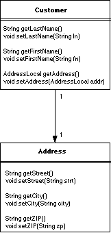

Una importante característica de CMP 2.0 es la posibilidad de definir
campos de relación entre beans. En este capítulo vamos a ver como
ejemplo una relación uno-a-uno unidireccional entre los EJBs Customer
y Address. El Customer tendrá una referencia a el Address,
pero el Address no podrá referenciar hacia atrás
el Customer. Son posibles también otras relaciones. Por
ejemplo, cada Address podría referenciar su Customer
con lo que tendríamos un ejemplo de una relación bidireccional
uno-a-uno, en la que ambos EJBs mantienen referencias al otro. Además
de relaciones uno-a-uno, los beans de entidad pueden tener relaciones uno-a-muchos,
muchos-a-uno y muchos-a-muchos.
Existen en total siete tipo de relaciones posibles. Por un lado, tenemos cuatro combinaciones de cardinalidad: uno-a-uno, uno-a-muchos, muchos-a-uno y muchos-a-muchos. Y por otro lado tenemos dos posibles direcciones de la relación: unidireccional y bidireccional. Lo cual nos lleva a ocho posibles relaciones. Pero la relación bidireccional uno-a-muchos es obviamente idéntica a la relación muchos-a-uno, lo que nos deja con siete posibles relaciones. La mejor forma de entender estas relaciones es mediante algún ejemplo. Ahí van algunos sacados del dominio de negocio de las agencias de viajes.
La relación entre un cliente y una dirección. Será necesario localizar una dirección de un cliente, pero probablemente no sea necesario localizar el alumno de una dirección.
La relación entre un cliente y un número de tarjeta de crédito de la universidad. Dado un cliente, será necesario buscar su número de tarjeta de crédito. Dado un número de tarjeta de crédito también será necesario buscar el cliente que la tiene.
La relación entre un cliente y un número de teléfono. Un cliente puede tener muchos números de teléfono. Será necesario localizar un número de teléfono de un cliente, pero no será normal usar alguno de esos números para localizar al cliente.
La relación entre un crucero y una reserva. Dada una reserva, será necesario localizar el crucero para el que se ha hecho la reserva. Dado un crucero, será necesario buscar todas las reservas para ese crucero.
La relación entre un crucero y un barco. Será necesario saber qué barco ha sido usado para un crucero en particular. Y muchos cruceros usarán el mismo barco a lo largo del funcionamiento del mismo.
La relación entre una reserva y un camarote. Es posible hacer una reserva para múltiples camarotes y va a ser necesario buscar el camarote asignado a una reserva particular.
La relación entre un crucero y un cliente. Un cliente puede hacer reservas en muchos cruceros, y cada crucero tiene muchos clientes. Será necesario buscar tanto los cruceros en los que ha embarcado un cliente como los clientes que van en un crucero dado.
En nuestro caso, la relación va a ser entre clientes y direcciones. Va a ser uno-a-uno y será unidreccional.
Los beans de entidad pueden formar relaciones con otros beans de entidad. En
la figura siguiente que ya mostramos en el tema anterior, el EJB Customer
tiene una relación uno-a-uno con el EJB Address.

El EJB Address es un objeto de negocio de grano fino que debería
usarse en el contexto de otro bean, lo que significa que debería tener
sólo interfaces locales. Un bean de entidad puede estar relacionado con
muchos beans de entidad distintos al mismo tiempo. Por ejemplo, podríamos
añadir fácilmente campos de relación para Phone,
CreditCard, y otros beans de entidad al EJB Customer.
No lo vamos a hacer, sin embargo, para mantener sencillo el ejemplo.
Siguiendo lo indicado en la figura anterior, definimos el EJB Address
como sigue:
import javax.ejb.EntityContext;
public abstract class AddressBean implements javax.ejb.EntityBean {
public Integer ejbCreateAddress(String street, String city, String state, String zip) {
setStreet(street);
setCity(city);
setState(state);
setZip(zip);
return null;
}
public void ejbPostCreateAddress(String street, String city, String state, String zip) {
}
// campos de persistencia
public abstract Integer getId();
public abstract void setId(Integer id);
public abstract String getStreet();
public abstract void setStreet(String street);
public abstract String getCity();
public abstract void setCity(String city);
public abstract String getState();
public abstract void setState(String state);
public abstract String getZip();
public abstract void setZip(String zip);
// metodos estandard callback
public void setEntityContext(EntityContext ec){}
public void unsetEntityContext(){}
public void ejbLoad(){}
public void ejbStore(){}
public void ejbActivate(){}
public void ejbPassivate(){}
public void ejbRemove(){}
}
La clase AddressBean define un método ejbCreateAddress(),
al que se llama cuando se crea un nuevo EJB Address, así
como bastantes campos de persistencia (street, city,
state, and zip). Los campos de persistencia se representan
por métodos de acceso abstractos, lo requerido para los campos de persistencia
en todas las clases de bean de entidad. Estos métodos de acceso abstractos
se corresponden con un conjunto de elementos XML definidos en el fichero de
descripción del despliegue. En tiempo de despliegue la herramienta de
despliegue del contenedor hará corresponder los campos de persistencia
del EJB Customer y del EJB Address con la base de
datos. Esto significa que debe haber una tabla en nuestra base de datos relacional
que contenga las columnas que emparejan con los campos de persistencia en el
EJB Address. En este ejemplo, usaremos una tabla ADDRESS
separada para almacenar la información sobre direcciones, pero los datos
podrían haberse declarado fácilmente en la otra tabla:
CREATE TABLE ADDRESS ( ID INT PRIMARY KEY NOT NULL, STREET CHAR(40), CITY CHAR(20), STATE CHAR(2), ZIP CHAR(10) )
Los beans de entidad no tienen por qué definir todas las columnas de
tablas correspondientes como campos de persistencia. De hecho, un bean de entidad
puede incluso no tener una única tabla correspondiente; puede tener los
campos de persistencia distribuidos entre varias tablas. Es la herramienta de
despliegue del contenedor la que se encargará de definir el modo de persistencia
del bean. En este caso, la columna ID es un campo auto-incrementado, creado
automáticamente por el sistema de base de datos o el sistema contenedor.
Es la clave primaria del EJB Address.
Una vez que se crea el bean, la clave primaria nunca puede ser modificada.
Cuando las claves primarias son valores autogenerados, como la columna ID
en la tabla ADDRESS, el contenedor EJB obtendrá el valor
de la clave primaria a partir de la base de datos.
Además de la clase bean, definiremos el interfaz local para el EJB
Address, lo que nos permitirá hacerlo accesible desde otros
beans de entidad (esto es, desde el EJB Customer) dentro del mismo
espacio de direcciones o proceso:
// Interfaz local del EJB Address
public interface AddressLocal extends javax.ejb.EJBLocalObject {
public String getStreet();
public void setStreet(String street);
public String getCity();
public void setCity(String city);
public String getState();
public void setState(String state);
public String getZip();
public void setZip(String zip);
}
// Interfaz local home de Address Address EJB's local home interface
public interface AddressHomeLocal extends javax.ejb.EJBLocalHome {
public AddressLocal createAddress(String street,String city,
String state,String zip) throws javax.ejb.CreateException;
public AddressLocal findByPrimaryKey(Integer primaryKey)
throws javax.ejb.FinderException;
}
El método ejbCreate() de la clase AddressBean
y el método findByPrimaryKey() de la interfaz home definen
ambos el tipo de la clave primaria como java.lang.Integer. En este
caso la clave primaria es autogenerada. La mayoría de fabricantes EJB
2.0 permitarán hacer corresponder claves primarias de beans de entidad
con campos autogenerados. En caso de que la herramienta no lo permitiera, tendríamos
que definir el valor de la clave primaria en el método ejbCreate().
El campo de relación para el EJB Address se define en la clase CustomerBean
usando un método de acceso abstracto, de la misma forma que se declaran
los campos de persistencias. En el código que sigue, la clase CustomerBean
aparece modificada para incluir el EJB Address como un campo de
relación
import javax.ejb.EntityContext;
import javax.ejb.CreateException;
public abstract class CustomerBean implements javax.ejb.EntityBean {
...
// relaciones de persistencia
public abstract AddressLocal getAddress();
public abstract void setAddress(AddressLocal address);
// campos de persistencia
public abstract boolean getHasGoodCredit();
public abstract void setHasGoodCredit(boolean creditRating);
...
Los métodos getAddress() y setAddress() son
auto-explicativos; permiten al bean acceder y modificar su relación address.
Estos méetodos de acceso representan un campo de relación, que
es un campo virtual que referencia a otro bean de entidad. El nombre del método
de acceso viene determinado por el nombre del campo de relación, tal
y como está definido en el fichero XML de descripción del despliegue.
En este caso hemos llamado a la dirección del cliente address, por lo
que los nombres de los métodos de acceso correspondientes serán
getAddress() y setAddress().
Para incluir la relación entre el EJB Customer y el EJB
Address, añadiremos una clave ajena, ADDRESS_ID,
en la tabla CUSTOMER. La clave ajena apuntará al registro
ADDRESS.
CREATE TABLE CUSTOMER ( ID INT PRIMARY KEY NOT NULL, LAST_NAME CHAR(20), FIRST_NAME CHAR(20), ADDRESS_ID INT )
Cuando se crea un nuevo EJB Address y se actualiza en una relación
address de un EJB Customer, la clave primaria del
EJB Address se colocará en la columna ADDRESS_ID
de la tabla CUSTOMER, creando una relación en la base de
datos:
// obtener referencia AddressLocal address = ... // establecer la relacion customer.setAddress(address);
Para dar información al bean Customer una dirección,
necesitamos proporcionar al bean la información sobre la dirección.
Esto podría parecer tan sencillo como declarar en la interfaz remota
del bean Customer una pareja de métodos de acceso correspondientes,
tales como setAddress()/getAddress(), pero no es así. Mientras
que es sencillo hacer disponible a los clientes remotos campos de persistencia,
no es tan sencillo hacer lo mismo con los campos de relación.
La interfaz remota de un bean no puede mostrar sus campos de relación.
En el caso del campo address, hemos declarado el tipo como AddressLocal,
el cual es una interfaz local, por lo que los métodos de acceso setAddress()/getAddress()
no pueden declararse en la interfaz remota del EJB Customer. La
razón de esta restricción sobre interfaces remotas es sencilla:
el EJBLocalObject, que implementa la interfaz local, está
optimizado para ser usado dentro del mismo espacio de direcciones que la instancia
del bean y no está preparado para ser usado a través de la red.
En otras palabras, las referencias que implementan la interfaz local de un bean
no pueden pasarse a través de la red, por lo que una interfaz local no
puede declarse como tipo devuelto o como un parámetro de una interfaz
remota.
Las interfaces locales (interfaces que extienden javax.ejb.EJBLocalObject),
por otro lado, pueden mostrar cualquier tipo de campo de relación. Con
interfaces locales, el cliente y el bean que está siendo usado están
localizados en el mismo espacio de direcciones, por lo que pueden pasarse referencias
locales sin problemas. Por ejemplo, si hubiéramos defenido un interfaz
local para el EJB Customer, podría incluir un método
que permita a los clientes locales el acceso directo a su campo de relación
address:
public interface CustomerLocal extends javax.ejb.EJBLocalObject {
public AddressLocal getAddress();
public void setAddress(AddressLocal address);
}
En lo que se refiere al EJB Address, es mejor definir una interfaz
local sólo debido a que es un bean de grano fino. Para solucionar las
restricciones de las interfaces remotas, los métodos de negocio en la
clase bean pueden intercambiarse datos, en lugar de referencias a Address.
Por ejemplo, podemos declarar un método que permita a un cliente enviar
información para crear una dirección para el Customer:
public abstract class CustomerBean implements javax.ejb.EntityBean {
public Integer ejbCreate(Integer id) {
setId(id);
return null;
}
public void ejbPostCreate(Integer id) {}
// metodos de negocio
public void setAddress(String street,String city,String state,String zip) {
try {
AddressLocal addr = this.getAddress();
if (addr == null) {
// Customer no tiene todavia una direccion. Crear una.
InitialContext cntx = new InitialContext();
AddressHomeLocal addrHome =
(AddressHomeLocal)cntx.lookup("AddressHomeLocal");
addr = addrHome.createAddress(street,city,state,zip);
this.setAddress(addr);
} else {
// Customer ya tiene una direccion. Cambiar sus campos.
addr.setStreet(street);
addr.setCity(city);
addr.setState(state);
addr.setZip(zip);
}
} catch(Exception e) {
throw new EJBException(e);
}
}
...
El método de negocio setAddress() en la clase CustomerBean
también se declara en la interfaz remota del EJB Customer,
por lo que podrá ser llamado por los clientes remotos:
public interface Customer extends javax.ejb.EJBObject {
public void setAddress(String street,String city,String state,String zip);
public Name getName() throws RemoteException;
public void setName(Name name) throws RemoteException;
public boolean getHasGoodCredit() throws RemoteException;
public void setHasGoodCredit(boolean creditRating) throws RemoteException;
}
Cuando el método de negocio CustomerRemote.setAddress()
se invoca en el CustomerBean, se usan los argumentos del método
para crear un nuevo EJB Address y para definirlo como el campo
de relación address, en el caso de que no exista ya ninguno.
Si el EJB Customer ya tiene una relación address,
el EJB Address se modifica para reflejar la nueva información.
Cuando creamos un nuevo EJB Address, el objeto home se obtiene
a través del JNDI ENC (environment naming context) y se llama a su método
createAdress(). Esto tiene como resultado la creación de
un nuevo EJB Address y la inserción de el correspondiente
registro ADDRESS en la base de datos. Después de haber creado
el EJB Address, se usa en el método setAddress().
La clase CustomerBean debe llamar explícitamente al método
setAddress(), o la nueva dirección no se asignará
al cliente. De hecho, si creamos simplemente un EJB Address sin asignárselo
al cliente con el método setAddress() estaremos creando
un EJB Address desconectado. Detallando más, tendrá
como efecto la creación de un registro ADDRESS de la base
de datos que no será referenciado por ningún registro CUSTOMER.
La viabilidad de entidades desconectadas depende, en parte, de la integridad referencial de la base de datos. Por ejemplo, si la integridad referencial de la base de datos permite sólo valores no nulos para la columna de clave ajena, la creación de una entidad desconectada puede resultar en un error de la base de datos.
Cuando se invoca el método local setAddress(), el contenedor
enlaza automáticamnte el registro ADDRESS y el registro
CUSTOMER. En este caso, coloca la clave primaria ADDRESS
en el campo ADDRESS_ID del registro CUSTOMER y crea
una referencia desde el registro CUSTOMER al registro ADDRESS.
Si el EJB Customer ya tiene un address, queremos
cambiar sus valores en lugar de crear un nuevo EJB Address. No
necesitamos usar el método local setAddress() si vamos a
actualizar los valores de un EJB Address ya existente, porque el
EJB Address que modifiquemos ya tiene una relación con el
bean de entidad.
También queremos proporcionar a los clientes un método de negocio
para obtener la información de la dirección de un EJB Customer.
Ya que no podemos enviar directamente una instancia del EJB Address
(porque es una interfaz local), debemos empaquetar los datos de la dirección
de alguna otra forma para enviárselos al cliente. Hay dos soluciones
a este problema: adquirir la interfaz remota del EJB Address y
devolverla o devolver los datos como un objeto valor dependiente (dependent
value object).
Podemos obtener la interfaz remota del EJB Address sólo
se ha sido definida. Los beans de entidad pueden tener un conjunto de interfaces
remotas, locales o ambas. En la situación actual, el EJB Address
tiene un grano demasiado fino para justificar la creación de una interfaz
remota, pero en muchas otras circunstancias podemos tener realmente una interfaz
remota. Por ejemplo, si el EJB Customer referenciara a un EJB SalesPerson,
el CustomerBean podría convertir la referencia local en una referencia
remota. Esto se haría accediendo al objeto EJB local, obteniendo su clave
primaria (EJBLocalObject.getPrimaryKey()), obteniendo el home remoto del EJB
SalesPerson a partir del JNDI ENC, y luego usando la clave primaria y la referencia
home remota paa encontrar una referencia a la interfaz remota:
public SalesRemote getSalesRep(){
SalesLocal local = getSalesPerson();
Integer primKey = local.getPrimaryKey();
Object ref = jndiEnc.lookup("SalesHomeRemote");
SalesHomeRemote home = (SalesHomeRemote)
PortableRemoteObject.narrow(ref, SalesHomeRemote.class);
SalesRemote remote = home.findByPrimaryKey( primKey );
return remote;
}
La otra opción es usar un valor dependiente para pasar los datos del
EJB Address entre el EJB Customer y los clientes remotos.
Este es el enfoque recomendado para los beans de grano fino como el EJB Address.
El siguiente código muestra como se usa la clase de valor dependiente
AddressDO junto con las componentes locales del EJB Address (el
sufijo “DO” en AddressDO es una convención que
se suele usar para denominar a las clases que definen valores dependientes;
significa “dependent object”):
public abstract class CustomerBean implements javax.ejb.EntityBean {
public Integer ejbCreate(Integer id) {
setId(id);
return null;
}
public void ejbPostCreate(Integer id) {
}
// metodos de negocio
public AddressDO getAddress() {
AddressLocal addrLocal = getHomeAddress();
if(addrLocal == null) return null;
String street = addrLocal.getStreet();
String city = addrLocal.getCity();
String state = addrLocal.getState();
String zip = addrLocal.getZip();
AddressDO addrValue = new AddressDO(street,city,state,zip);
return addrValue;
}
public void setAddress(AddressDO addrValue)
throws EJBException {
String street = addrValue.getStreet();
String city = addrValue.getCity();
String state = addrValue.getState();
String zip = addrValue.getZip();
AddressLocal addr = getHomeAddress();
try {
if(addr == null) {
// Customer no tiene una direccion. Crear una nuave.
InitialContext cntx = new InitialContext();
AddressHomeLocal addrHome = (AddressHomeLocal)cntx.lookup
("AddressHomeLocal");
addr = addrHome.createAddress(street, city, state, zip);
this.setHomeAddress(addr);
} else {
// Customer ya tiene una relacion. Modificar sus campos.
addr.setStreet(street);
addr.setCity(city);
addr.setState(state);
addr.setZip(zip);
}
} catch(NamingException ne) {
throw new EJBException(ne);
} catch(CreateException ce) {
throw new EJBException(ce);
}
}
...
He aquí la definición de una clase de valor dependiente AddressDO,
que usa el enterprise bean para enviar información de la dirección
al cliente:
public class AddressDO implements java.io.Serializable {
private String street;
private String city;
private String state;
private String zip;
public AddressDO(String street, String city, String state, String zip ) {
this.street = street;
this.city = city;
this.state = state;
this.zip = zip;
}
public String getStreet() {
return street;
}
public String getCity() {
return city;
}
public String getState() {
return state;
}
public String getZip() {
return zip;
}
}
El valor dependiente AddressDO es inmutable, lo que significa
que no puede ser alterado una vez que ha sido creado. La inmutabilidad ayuda
a reforzar el hecho de que la clase de valor dependiente es una copia, no una
referencia remota.
Ahora podemos usar una aplicación cliente para probar la relación
del EJB Customer con el EJB Address. A continuación
se encuentra el código del cliente que crea un nuevo cliente, le proporciona
una dirección y luego le cambia la dirección.
import javax.naming.InitialContext;
import javax.rmi.PortableRemoteObject;
import javax.naming.Context;
import javax.naming.NamingException;
import java.util.Properties;
public class Client {
public static void main(String [] args) throws Exception {
// obtener CustomerHome
Context jndiContext = getInitialContext();
Object obj=jndiContext.lookup("CustomerHomeRemote");
CustomerHome home = (CustomerHomeRemote)
javax.rmi.PortableRemoteObject.narrow(obj, CustomerHomeRemote.class);
// crear un Customer
Integer primaryKey = new Integer(1);
Customer customer = home.create(primaryKey);
// crear un AddressDO
AddressDO address = new AddressDO("1010 Colorado","Austin",
"TX", "78701");
// establecer la direccion
customer.setAddress(address);
address = customer.getAddress();
System.out.print(primaryKey+" = ");
System.out.println(address.getStreet());
System.out.println(address.getCity()+","+
address.getState()+" "+
address.getZip());
// crear una nueva direccion
address = new AddressDO("1600 Pennsylvania Avenue NW",
"DC", "WA", "20500");
// cambiar la direccion del customer
customer.setAddress(address);
address = customer.getAddress();
System.out.print(primaryKey+" = ");
System.out.println(address.getStreet());
System.out.println(address.getCity()+","+
address.getState()+" "+
address.getZip());
// borrar Customer
customer.remove();
}
public static Context getInitialContext()
throws javax.naming.NamingException {
Properties p = new Properties();
// ... Specify the JNDI properties specific to the vendor.
//return new javax.naming.InitialContext(p);
return null;
}
}